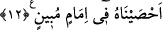

azametinin müşâhedesindedirler. Sâdık bir kimsenin mev’izasının/öğüdünün bereketi
onların Allah’a olan ta’zim ve saygılarını artırır. Bu mânâ arttıkça kulluk da artar.
Yorgunluk zâil olur ve Rab ile ünsiyet hâsıl olur.
Bilesin ki cennet; cemâl ve ünsiyet yurdu, ilâhî latîf bir tenezzüldür. Cehennem ise
celâl ve ceberût yurdudur. Ebedî ve sonsuz olarak Rab ismi cennet ehli ile Cebbâr ismi
cehennem ehli ile beraberdir. Allah Teâlâ “İşte şunlar cennet içindir, ben aldırış
etmem. Şunlar da cehennem içindir, ben buna da aldırış etmem.”[106] buyurmuştur.
Allah Teâlâ bunlara aldırış etmez. Çünkü muvahhidler hakkında veya müşrikler
hakkında Allah Teâlâ’nın rahmeti gazabını geçmiştir. İkinciler hakkında rahmetten
maksad yoktan var etme rahmetidir. Çünkü bu rahmet kullardan meydana gelip gazaba
sebep olan şeyden (küfür, inkar ve isyandan) öncedir. Bundan dolayı Allah Teâlâ bu iki
grubun yaptıklarına aldırış etmez. Şayet bu aldırış etmemekten maksad bazılarının
vehmettiği şey olsaydı günahlarından dolayı kimse cezâlandırılmaz, Hak Teâlâ kendi
zâtını gazab etmekle vasfetmez ve kimseyi şiddetle tutup yakalamazdı. Bütün bunlar
Allah Teâlâ’nın aldırış etmesinden ve yakalanan kimselere önem vermesindendir. el-
Fütûhâtü’l-Mekkiyye’de böyle geçmektedir.
12. Şüphesiz ölüleri ancak biz diriltiriz. Onların yaptıkları her işi, bıraktıkları her
izi yazarız. Biz, her şeyi apaçık bir kitapta (levh-i mahfûz’da) sayıp yazmışızdır.
“Şüphesiz ölüleri ancak biz” kudretimizin kemâli makamından olarak, ölümlerinden
sonra yeniden “diriltiriz” ve onları amellerine göre cezâlandırırız. İşte o zaman
insanlardan müjdelenen ve uyarılanlar için ikramın ve intikamın kemâli zâhir olur.
Burada çoğul siygasının kullanılması, ta’zim için ve Allah Teâlâ’nın sıfatların çok
olması sebebiyledir. Bazıları ölülerin diriltilmesinde meleklerin payı olduğu için
burada çoğul siygasının kullanıldığını söylemiştir. Ancak “__WORD__ (biz)” sözünün delâlet
ettiği hasr/tahsis bu görüşe ters düşer. el-Bahr’da “Allah Teâlâ te’kidi tekrarlamak için
zamiri tekrar etmiştir” denilmiştir.
“__WORD__ (diriltmek)” bir şeyi his ve hareketi olan bir canlı haline getirmektir. Ölü ise
ruhu bedeninden çıkarılan kimsedir. Peygamberimiz (s.a.) her şımarık zengine ve zâlim
sultana da ‘ölü’ demiştir. Bu Hz. Peygamber (s.a.)’in şu sözünde ifade edilmiştir: “Dört
şey kalbi öldürür: Günah üstüne günah işlemek, kadınlarla çok sohbet/beraberlik
edip konuşmak, ahmakla tartışıp atışmak ve ölülerle beraber oturmak/düşüp
kalkmak.” Peygamberimiz (s.a.)’e: “Ey Allah’ın Rasûlü, ölülerle oturmak nedir?” diye